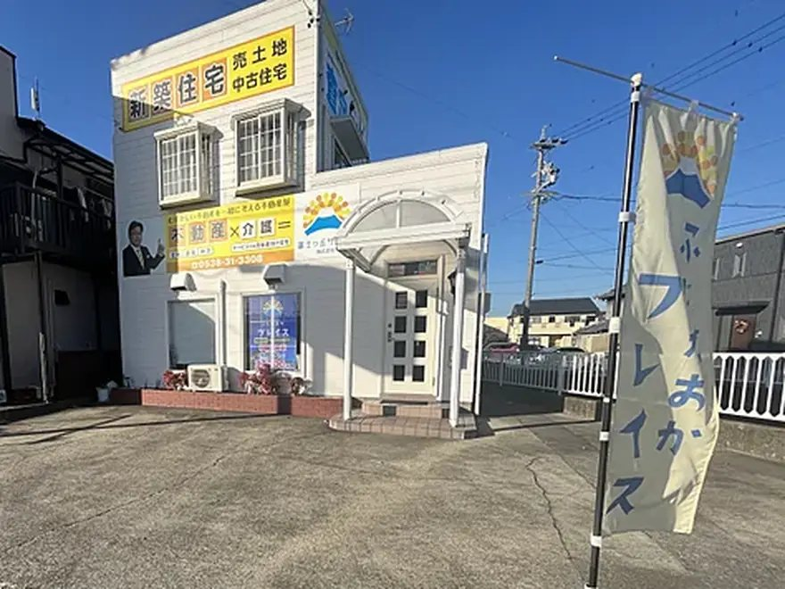

森町の家・土地を売りたい方へ｜売却の募集を受け付けています
仲介専門・買取なし｜磐田市見付の店舗から森町へ出張対応
森町ライフハックの運営会社・富士ヶ丘サービス（宅地建物取引業・磐田市見付）が、森町の実家・空き家・土地の売却を仲介で受け付けます。買取はせず、市場に公開して買主を探し、売主の手元に1円でも多く残すことを方針にしています。
売ると決めていなくても、相続登記の前でも、家財が残っていても、遠方にお住まいでも、相談はそこから始められます。
先に結論
森町で家や土地を売るときに最初に決めるのは「誰に頼むか」ではなく「今の状態を正しく把握すること」です。名義、境界、接道、農地や山林の有無、家財の量、固定資産税の額。これが分かると、売れる価格の目安も、売る前にやるべきことも、売らない選択肢（貸す・使う・解体）との比較もできます。
富士ヶ丘サービスは、その整理を無料で行う「実家カルテ」から相談を始めます。カルテを作ったうえで売却を選ぶなら、媒介契約を結び、アットホームなどの不動産ポータル、自社サイト、そしてこの森町ライフハックの買主募集の特集ページで買主を探します。実際にいま森町で2物件を募集中です。
こんな状況から相談できます
相談から引渡しまでの流れ
- 相談・実家カルテ（無料）住所をもとに、道路・境界・農地・登記・ハザードの状況を宅建士が整理します。入力約1分、作成料0円。申込みだけで売却依頼にはなりません。
- 現地確認と資料の照合磐田本社から森町へ出張し、建物・敷地・接道・残置物を確認します。登記事項証明書、公図、固定資産税の課税明細を照合します。
- 価格と進め方の相談周辺の成約事例と物件の状態から、売り出し価格の考え方を説明します。現況有姿で出すか、片付けや修繕をしてから出すかも一緒に決めます。
- 媒介契約と募集開始媒介契約を書面で結び、アットホーム、自社サイト、森町ライフハックの買主募集の特集ページで写真と確認ポイントつきの記事として買主を探します。
- 内覧対応と条件交渉内覧の立会い、買主からの質問への回答、価格・引渡し時期・残置物の条件交渉を宅建士が行います。
- 契約・決済・引渡し重要事項説明、売買契約、決済、鍵の引渡し。売却後の確定申告（譲渡所得）に必要な書類もお渡しします。
費用の考え方
相談、実家カルテ、現地確認、価格の相談までは費用がかかりません。仲介手数料は成約したときにだけ発生し、宅地建物取引業法で定める上限の範囲内です。価格800万円以下の物件には別の特例があり、金額と計算方法は媒介契約の前に書面で説明します。
売主側で別にかかる可能性があるのは、相続登記の費用（司法書士報酬・登録免許税）、境界確定の測量費、家財の処分費、解体して土地で売る場合の解体費、売却益が出た場合の譲渡所得税です。相続した空き家には譲渡所得の特別控除の制度があり、条件に合うかどうかを早めに確かめると手取りが変わります。どれも「かかるかもしれない費用」として最初に一覧にし、見積りが出るまではゼロにせず保留として残します。
売る前に、自分で確認できること
森町の空き家バンクへの登録と、宅建業者による売却の募集は、同時に進めることができます。どちらを先にするかも相談の中で整理します。
森町で実際に募集している例
売却を依頼いただいた物件は、こうした記事の形で買主を募集します。写真と物件概要だけでなく、向く人・向かない人、購入前に確認する順番まで書くことで、見学に来る買主の理解が深まり、契約後のトラブルを減らします。
お問い合わせ
富士ヶ丘サービス株式会社（磐田市見付）／9:00〜18:00、水曜定休。予約があれば時間外も対応します。
売ると決めていなくても相談できます。相続登記前、家財が残った状態、農地や山林を含む場合、遠方にお住まいの場合も、まず状況を整理するところから始めます。
※このご案内は、本サイト運営会社（富士ヶ丘サービス株式会社）の宅地建物取引業としてのサービスです。ご利用は任意で、森町の制度利用には影響しません。森町役場とは関係ありません。
よくある質問
売ると決めていなくても相談できますか
できます。使う・貸す・売る・解体のどれにするか決まっていない段階から、住所をもとに道路・境界・農地・登記の状況を整理する「実家カルテ」を無料で作成します。申込みだけで売却の依頼にはなりません。
買取はしてもらえますか
富士ヶ丘サービスは仲介に特化し、自社が買主になることはしていません。市場に公開して買主を探すほうが、売主の手元に残る金額が大きくなるのが通常だからです。急いで現金化したい場合は、その事情も含めて相談してください。
相続登記がまだ終わっていません
売却には相続登記が必要ですが、相談は登記前から始められます。相続人の確認、必要書類、司法書士への依頼の段取りを一緒に整理します。相続登記は2024年4月から義務化されています。
家財が残ったまま、遠方に住んでいます
家財が残った状態でも相談できます。片付けの順番、処分の見積り、鍵の預かり、現地確認の代行など、遠方の所有者が森町へ何度も来なくて済む進め方を提案します。
農地や山林も一緒に売れますか
農地の売買には農地法の許可、山林は境界と進入路の確認が必要で、住宅と同じ手順では進みません。まとめて相談いただき、森町農業委員会への確認を含めて一つずつ順番を整理します。
仲介手数料はいくらですか
成約したときにだけ発生し、宅地建物取引業法で定める上限の範囲内です。価格800万円以下の物件には別の特例があります。金額と計算方法は、媒介契約の前に書面で説明します。
関連する相談室
掲載者（宅地建物取引業者）の表示
宅地建物取引業免許：静岡県知事（2）第14083号
所属団体：（公社）全日本不動産協会 会員／東海不動産公正取引協議会 加盟
所在地：〒438-0086 静岡県磐田市見付5789-1（磐田市見付加茂川の交差点東側）
電話：0538-31-3308（9:00〜18:00、水曜定休。予約があれば時間外も対応）
代表取締役・宅地建物取引士：大石浩之
最終確認日：2026-10-04 ／ 制度・税の取扱いは変わります。実行前に森町役場・税務署・専門家へ再確認してください。